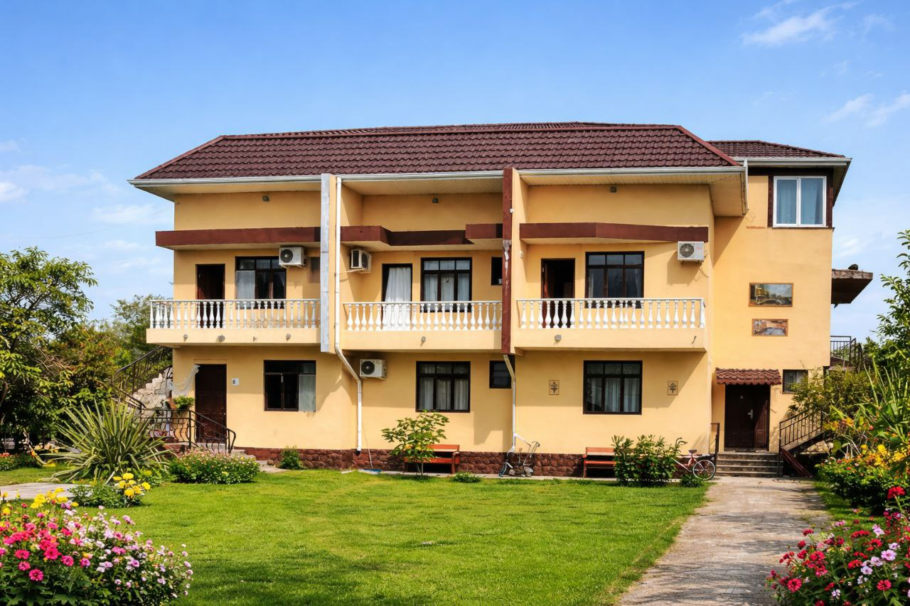
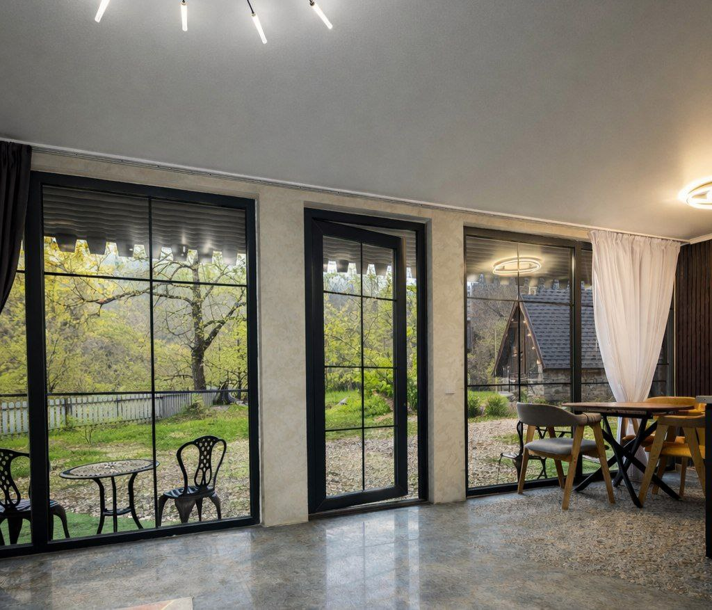
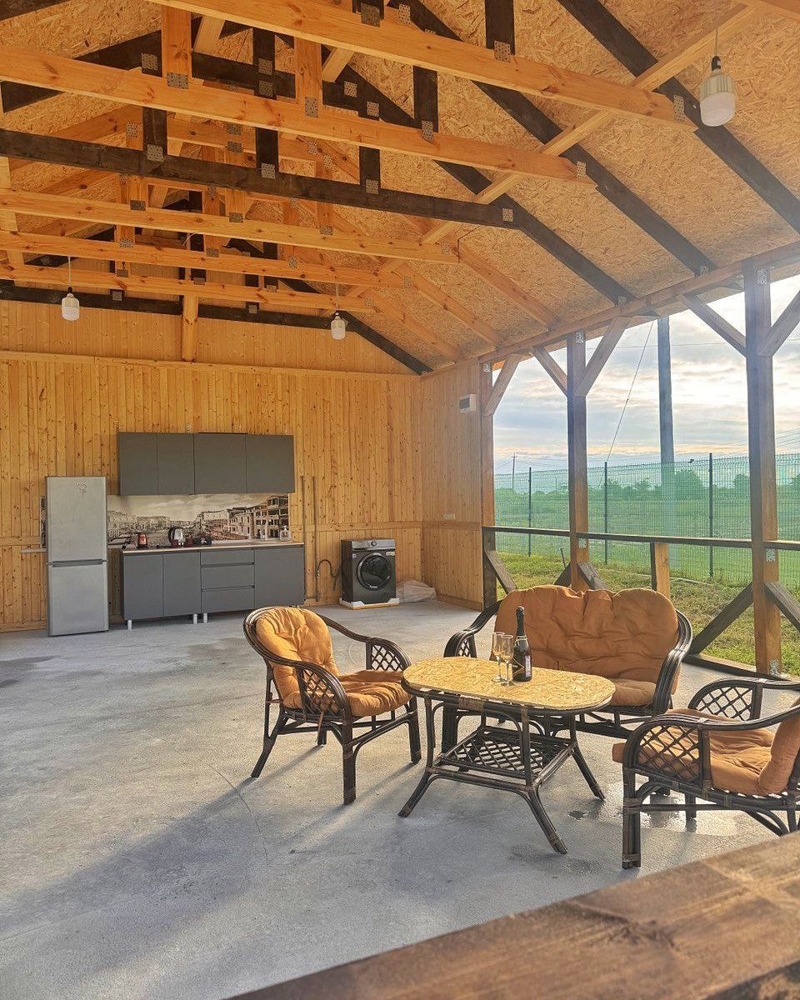
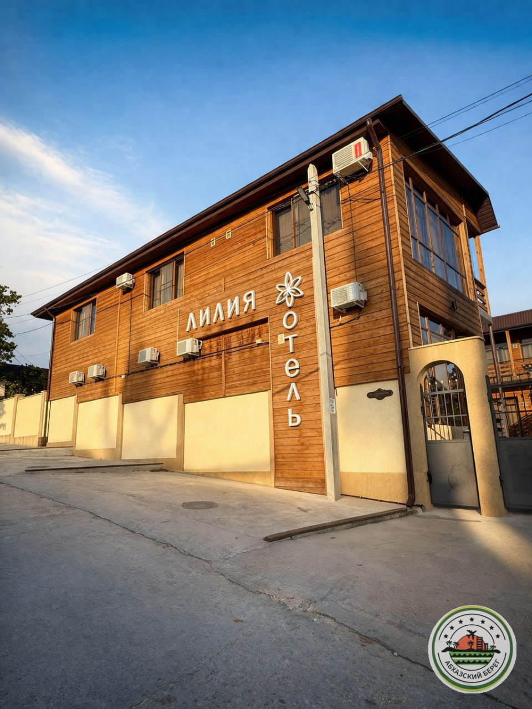
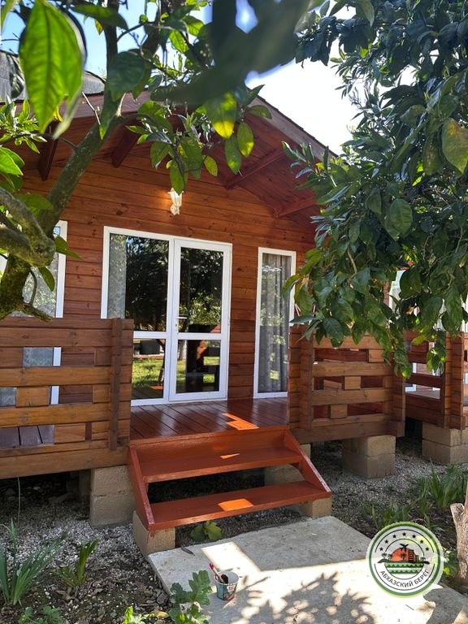
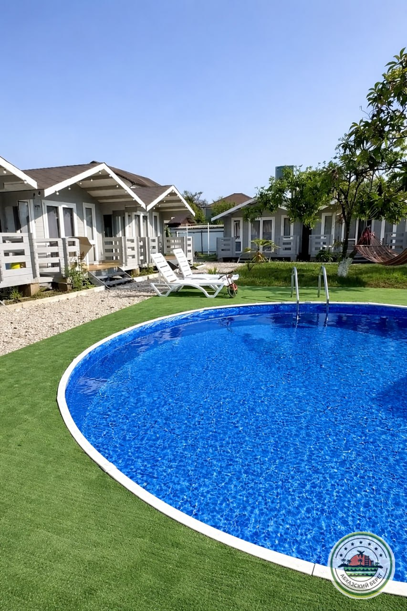
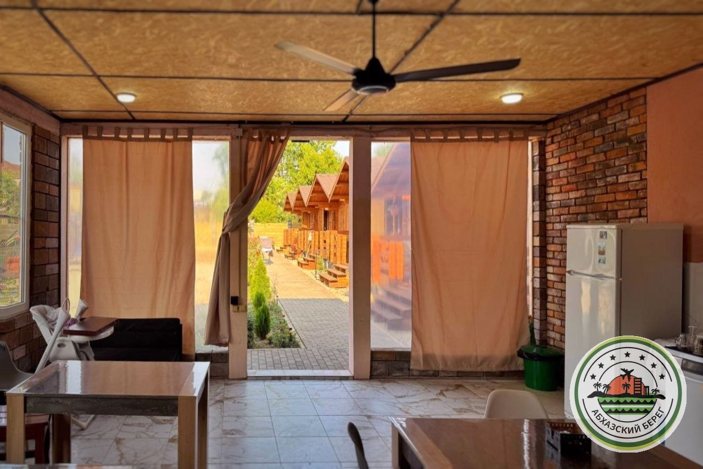
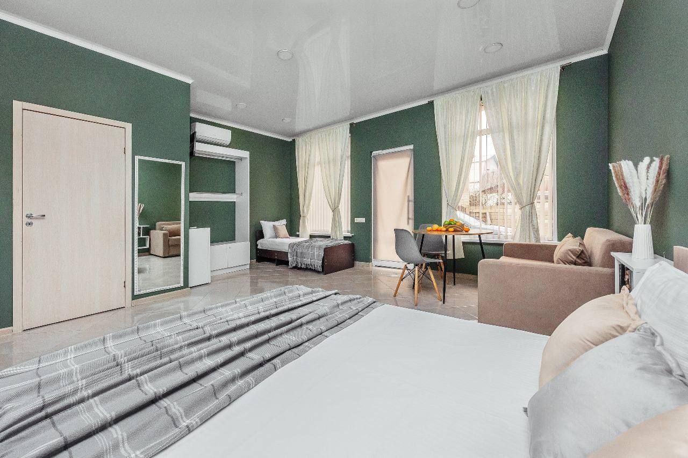

Варианты размещения в г. Гудаута
1

"БЕЛАЯ РЕЧКА" гостевой дом с кафе
📍Гудаута, Хыпста, ул. Тарнава, 43.124194, 40.554159🏖 галечный пляж, 10 минут пешком
2

"ДЫШИ ГЛУБЖЕ" домики в горах
📍 13 км Рицинского ущелья, Рицинское шоссе🏖 до пляжа 30 минут на авто
3

"ЛЕОН" домики
📍Гудаутский р-н, с. Хыпста, поселок Бамбора🏖️ 3 минуты до пляжа
4

"ЛИЛИЯ" уютный отель с завтраками
📍Гудаута, ул. Пушкина, 2🏖 1 минута до пляжа, галечный
5

"НЕАНИЛА" эко домики
Гудаута. 2 минуты до пляжа, размещение до 4 человек.
6

"ФУЛЛ ХАУС" домики с бассейном
📍Гудаута, ул. Агрба, 40🏖15 минут до пляжа, галечный
7

"ЭСМА" домики с бассейном в центре
📍Гудаута, ул. Рафаэля Царгуш 20🏖 7 минут до пляжа (600м)
8
"ПЕРЛ" дом под ключ
Гудаута. ️ 0 минут до пляжа, размещение до 15 человек.
9

"ЭСМА" студия на большую семью
Гудаута. 7 минут до пляжа (600м), размещение до 5 чел.